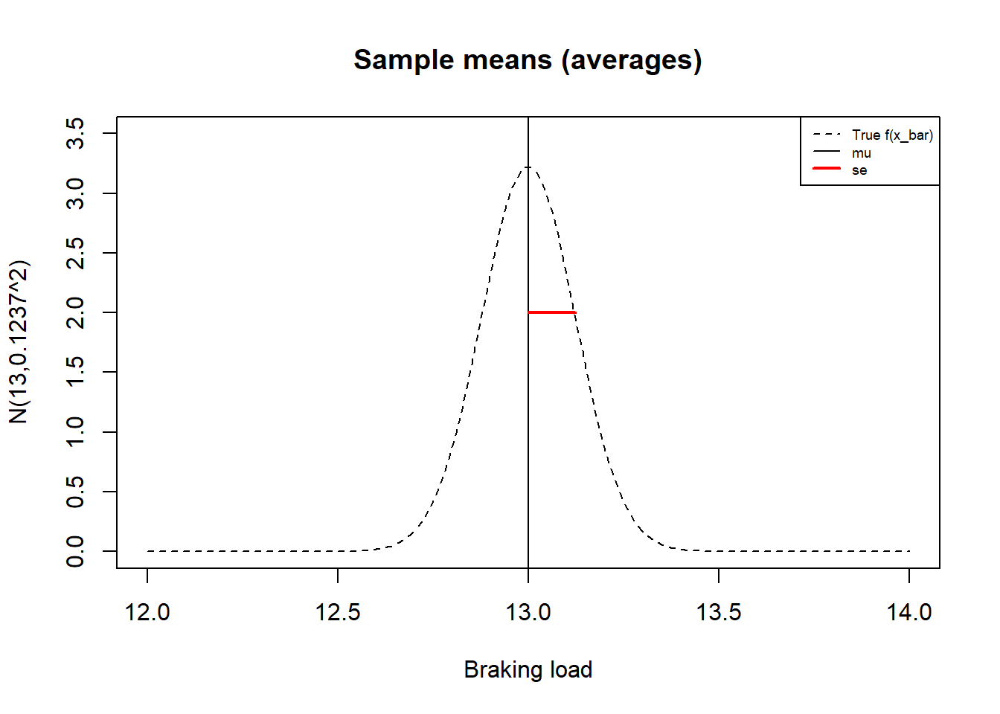
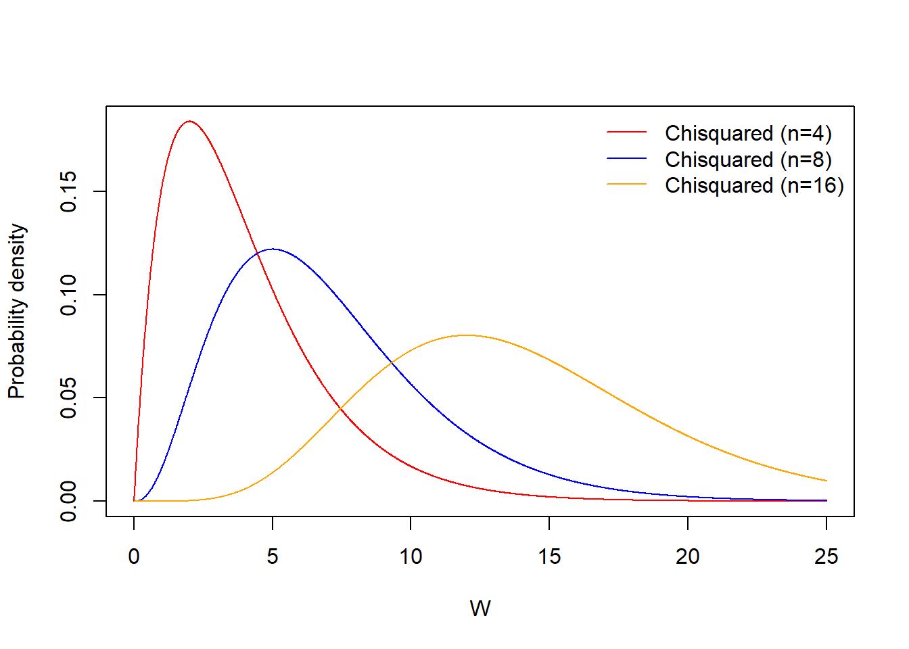

Chapter 10 Distribuciones de muestreo
10.1 Objetivo
En este capítulo, vamos a estudiar las estimaciones de la media y la varianza de las distribuciones normales utilizando muestras aleatorias.
Introduciremos la media muestral y la varianza muestral como variables aleatorias que estiman los parámetros de la distribución normal.
La media muestral y la varianza muestral tienen funciones de densidad de probabilidad, estas se denominan funciones de densidad muestral.
10.2 Muestra aleatoria
Ejemplo (Cables)
Imagina que un cliente le pide a tu empresa metalúrgica que le venda cables a \(8\) que pueden transportar hasta \(96\) Toneladas; eso es \(12\) Toneladas cada uno. Debes garantizar que ninguno de ellos frenará con este peso.
Tienes en existencia un conjunto de cables que podrían servir, pero no estás seguro. Por lo que tomas \(8\) cables aleatoriamente, y los cargas hasta que se rompen.
Decimos que tomas una muestra aleatoria de tamaño \(8\), lo que significa que repites el experimento aleatorio \(8\) veces. Aquí están los resultados
## [1] 13.34642 13.32620 13.01459 13.10811 12.96999 13.55309 13.75557 12.62747
Definición:
Una muestra aleatoria de tamaño \(n\) es la repetición de un experimento aleatorio \(n\) independientes veces.
- Una muestra aleatoria es una variable aleatoria \(n\)-dimensional
\[(X_1, X_2, ... X_n)\]
donde \(X_i\) es la i-ésima repetición del experimento aleatorio con distribución común \(f(x; \theta)\) para cualquier \(i\)
- Una observación de una muestra aleatoria es el conjunto de \(n\) valores obtenidos de los experimentos
\[(x_1, x_2, ... x_n)\] Nuestra observación de la muestra de tamaño \(8\) cables fue
## [1] 13.34642 13.32620 13.01459 13.10811 12.96999 13.55309 13.75557 12.62747Ejemplo (Cables)
En la muestra observada de la carga de rotura de los cables se observó que
Ninguno de ellos rompió en \(12\) Toneladas.
Hubo uno que rompió en \(12.62747\) Toneladas.
¿Te arriesgas y vendes una muestra aleatoria de \(8\) cables de tu stock? ¿Qué sucede si su empresa es responsable de la rotura de un cable y tiene que pagar una multa elevada?
Para garantizar al cliente que los cables no se romperán a \(12\) Toneladas, nos gustaría ver que \(P(X \leq 12)\) es razonablemente bajo.
10.3 Cálculo de probabilidades
Para calcular probabilidades necesitamos:
Un modelo de probabilidad (función de probabilidad)
Los parámetros del modelo (los valores de la función de probabilidad)
Vamos a suponer que la carga de rotura de los cables sigue una función de densidad de probabilidad normal.
\[X \rightarrow N(x; \mu, \sigma^2)\]
Para calcular \(P(X \leq 12)\), necesitamos los parámetros \(\mu\) y \(\sigma^2\). ¿Cómo podemos estimar los parámetros de la muestra observada?
10.4 Estimación de los parámetros
Para encontrar valores probables para los parámetros usamos datos. Por lo tanto, tomamos una muestra aleatoria. Es decir, repetimos el experimento \(n\) veces, recolectamos datos y los usamos para estimar los parámetros.
Estimación de la media y la varianza
Recordemos que para una variable aleatoria discreta, definimos la media como
\[\mu=\sum_{i}^m x_if(x_i)\]
que es el centro de gravedad de las probabilidades, donde \(f(x_i)\) es la función de probabilidad. Esta definición fue motivada por el centro de gravedad de las observaciones
\[\bar{x}= \frac{1}{n} \sum_{i}^n x_i = \sum_{i}^m x_if_i\]
que definimos como promedio, y donde \(f_i\) son las frecuencias relativas. Recuerda que \(n\) es el número de observaciones (puede ser tan grande como queramos) y \(m\) es el número de resultados posibles (normalmente fijado por el espacio muestral). Discutimos que cuando \(n \rightarrow \infty\) entonces
\[\hat{P}(X=x)=f_i\] Esto significa que las probabilidades pueden ser estimadas (poniéndose un sombrero) por las frecuencias relativas cuando \(n\) es grande, porque \(lim_{n\rightarrow \infty}f_i=f(x_i)\). Por lo tanto, también deberíamos tener que la media \(\mu\) puede ser estimada por el promedio \(\bar{x}\)
\[\hat{\mu}=\bar{x}= \sum_{i}^m x_i\hat{P}(X=x)\]
Asi pues, podemos tomar el centro de la función de probabilidad como el centro de gravedad de los datos.
Con la varianza
\[\sigma^2=\sum_{i}^m (x_i-\mu)^2f(x_i)\]
tenemos una situación similar. En el límite cuando \(n \rightarrow \infty\)
\[\hat{\sigma}^2=s^2=\frac{1}{n-1}\sum_{i=1}^n (x_i-\bar{x})^2\]
y suponemos que el momento de inercia de los datos es cercano al momento de inercia de las probabilidades.
Ejemplo (Cables)
Suponiendo que la carga de rotura de nuestro cable es una variable aleatoria normal
\[X \rightarrow N(x; \mu, \sigma^2)\]
usamos las estimaciones \(\bar{x}_{stock}=13,21\) (mean(x)) y \(s^2=0.3571565^2\) (sd( x)^2) como los valores de \(\mu\) y \(\sigma^2\). De tal forma que el modelo ajustado es
\[X \rightarrow N(x; \mu=13.21, \sigma^2=0.3571565^2)\] En este problema no sabíamos \(\mu\) o \(\sigma\) y, por lo tanto, estamos adivinando su valor y el modelo subyacente

¿Cuál es la probabilidad de que el cable se rompa a \(12\) Toneladas?
Como \[X \rightarrow N(x; \mu=13.21, \sigma^2=0.3571565^2)\]
entonces
\[P(X \leq 12)= F(12; \mu=13.21, \sigma^2=0.1275608)\]
En R pnorm(12,13.21, 0.3571565)\(=0.000352188\)
Dada la muestra observada, existe una probabilidad estimada de \(0.03\%\) de que un solo cable se rompa en \(12\) Toneladas. Tenemos un argumento probabilístico para vender los cables.
10.5 Margen de error de las estimaciones
Cuando estimamos los parámetros usando datos, como al tomar el valor de \[\hat{\mu}=\bar{x}\]
por el valor de \(\mu\); y el valor de
\[\hat{\sigma}^2=s^2\] por el valor de \(\sigma^2\), sabemos que estamos cometiendo un error. Sabemos que si tomamos otra muestra de tamaño \(8\) cables la estimación cambiará, porque el promedio \(\bar{x}\) cambiará.
¿Podemos tener una idea de cuán grande es el error de nuestra estimación?
Lo primero que debemos darnos cuenta es que el valor numérico que obtenemos para \[\bar{x}\] es la observación de una variable aleatoria \[\bar{X}\]
Definición
La media muestral (o promedio) de una muestra aleatoria de tamaño \(n\) se define como
\[\bar{X}=\frac{1}{n}\sum_{i=1}^n X_i\]
El promedio es una variable aleatoria que en nuestra muestra de tamaño \(8\) tomó el valor
\[\bar{x}_{stock}=13.21\]
Si tomamos otra muestra, este número cambiará.
La media como estimador
El número \(\bar{x}\) se puede usar para estimar el parámetro desconocido \(\mu\) porque la variable aleatoria \(\bar{X}\) satisface estas dos propiedades importantes
- es insesgada: \[E(\bar{X})=\mu\]
- es consistente: \[lim_{n \rightarrow \infty} V(\bar{X}) = 0\]
La primera propiedad se tiene porque \[E(\bar{X})=E\big(\frac{1}{n}\sum_{i=1}^n X_i\big)=E(X)=\mu\]
La segunda propiedad se tien porque \[V(\bar{X})=V\big(\frac{1}{n}\sum_{i=1}^n X_i\big)=\frac{V(\sum_{i=1}^ nX_i)}{n^2}=\frac{V(X)}{n}=\frac{\sigma^2}{n}\]
Que utiliza el hecho de que cada experimento aleatorio en la muestra es independiente y por lo tanto \(V(\sum_{i=1}^n X_i)=nV(X)\).
Estimación de \(\mu\)
Como consecuencia de las propiedades 1 y 2, entendemos que el valor \(\bar{x}\) se concentra más y más cerca de \(\mu\) a medida que aumenta \(n\). Esto significa que el error que cometemos cuando tomamos un valor de \(\bar{x}\) como la estimación de \(\mu\)
\[\bar{x}=\hat{\mu}\]
se vuelve más y más pequeño a medida que la muestra se hace más y más grande.
10.6 Inferencia
Sabemos que cuando tomamos muestras grandes, nuestro error es pequeño. Sin embargo, para un valor dado de \(n\) queremos tener una medida del error. Por lo tanto, nos preguntamos por la probabilidad de cometer un error de un tamaño dado cuando estimamos \(\mu\) con \(\bar{x}\).
Cuando calculamos probabilidades en un estimador, decimos que estamos haciendo una inferencia. Los problemas de inferencia suelen surgir cuando nos interesa calcular la probabilidad de cometer un error al estimar \(\mu\) con \(\bar{x}\).
Para calcular probabilidades necesitamos
Un modelo de probabilidad (función de probabilidad)
Los parámetros del modelo (los valores de la función de probabilidad)
¿Cuáles son las funciones de probabilidad de \(\bar{X}\) y \(S^2\) para que podamos calcular sus probabilidades?
Estas funciones de probabilidad se denominan funciones de probabilidad de muestreo, porque se derivan de un experimento de muestreo.
Ejemplo (cables)
Hagamos una pregunta de inferencia. Imagina que nuestros cables están certificados para romperse con una carga promedio de \(\mu = 13\) Toneladas con varianza \(\sigma^2=0.35^2\).
Si tomamos una muestra aleatoria de \(8\) cables, ¿Cuál es la probabilidad de que la media de la muestra \(\bar{X}\) esté dentro de un margen de error de \(0.25\) Toneladas de la media \(\mu\)?
\[P(- 0.25\leq \bar{X}-\mu \leq 0.25)\]
Para calcular esta probabilidad, necesitamos conocer la función de probabilidad de \(\bar{X}\).
10.7 Distribución media muestral
Teorema: Si \(X\) sigue una distribución normal \[X \rightarrow N(\mu, \sigma^2)\]
entonces \(\bar{X}\) es normal
\[\bar{X} \rightarrow N(\mu, \frac{\sigma^2}{n})\] y \(\bar{X}\) tiene
media (insesgado) \[E(\bar{X})=\mu\] y
varianza (consistente) \[V(\bar{X})=\frac{\sigma^2}{n}\]
Llamamos \(se=\sqrt{V(\bar{X})}\) al error estándar de la media muestral. El error estándar también se escribe como \(\sigma_{\bar{x}}\). Ten en cuenta que este es el error que esperamos cuando usamos \(\bar{x}\) como el valor de \(\mu\), y es el sesgo que necesitábamos corregir para \(S_n^2\).
Entonces, si sabemos \(\mu\) y \(\sigma\), podemos calcular las probabilidades de \(\bar{X}\) usando la distribución normal.
Recuerda que tenemos dos funciones de probabilidad:
La función de probabilidad de \(X\) también se conoce como la función de probabilidad de la población
La función de probabilidad de \(\bar{X}\) es una función de probabilidad de la muestra.
Ejemplo (cables)
Densidades de probabilidad para \(X\) y \(\bar{X}\)
En nuestro nuevo problema, ahora sabemos \(\mu\) y \(\sigma\) y la función de probabilidad de la población
\[X \rightarrow N(\mu=13, \sigma^2=0.35^2)\]

Dado que \(X\) es normal, entonces \(\bar{X}\) es normal y, por lo tanto, también conocemos la función de probabilidad de la media muestral \(\bar{X}\)
\[\bar{X} \rightarrow N(13, \frac{0.35^2}{8})\]
que tiene media y varianza
- \(E(\bar{X})=\mu=13\)
- \(V(\bar{X})=\frac{\sigma^2}{n}=\frac{0.35^2}{8}=0.01530169\)

Finalmente queremos calcular la probabilidad de que nuestra estimación tenga un margen de error de \(0.25\). Esa es una distancia de \(0.25\) de la media. Eso es \[P(-0.25 \leq \bar{X} - 13\leq 0.25)=P(12.75 \leq \bar{X} \leq 13.25)\]
\(=F(13.25; \mu, \sigma^2/n)-F(12.75; \mu, \sigma^2/n)\)
En R podemos calcularlo como:
pnorm(13.25, 13, 0.1237)-pnorm(12.75, 13, 0.1237)=0.956.
Recuerda: \(se=\sigma_{\bar{x}}=\sqrt{0.01530169}=0.1237\)
Por lo tanto el \(95.6\%\) de los promedios \(\bar{X}\) de muestras aleatorias de tamaño \(8\) están a una distancia de \(0.25\) de la media \(\mu=13\).
Si vendemos nuestro proceso para construir los cables, podemos decirles a los nuevos fabricantes que cuando sigan nuestras instrucciones, pueden probar el proceso tomando una muestra de tamaño \(8\) cables. En ese caso, pueden esperar que el promedio de la muestra caiga entre \((12.75, 13.25)\) alrededor de \(95\%\) de las veces.

Cuando realizamos el muestreo aleatorio observamos:
## [1] 13.34642 13.32620 13.01459 13.10811 12.96999 13.55309 13.75557 12.62747Asumiendo que \(\mu=13\) entonces nuestro error observado en la estimación de la media es la diferencia
\[\bar{x}_{stock}-\mu=13.21-13=0.21\]
Lo cual está dentro del margen de error de \(95.6\%\) y por lo tanto, debemos considerar que el proceso de fabricación está funcionando como se esperaba.

10.7.1 Suma muestral
Si estamos interesados en usar todos los \(8\) cables al mismo tiempo para transportar un total de \(96\) Toneladas, entonces deberíamos considerar sumar sus contribuciones individuales.
La suma muestral es la estadística
\[Y=n \bar{X}=\sum_{i=1}^n X_i\]
Una estadística es cualquier función de la muestra aleatoria \((X_1, ... X_n)\).
Teorema: si \(X\) sigue una distribución normal \[X \rightarrow N(\mu, \sigma^2)\]
entonces \(Y\) es normal
\[Y \rightarrow N(n\mu, n\sigma^2)\]
\(Y\) tiene
- media \[E(Y)=n\mu\]
- varianza \[V(Y)=n\sigma^2\]
Ejemplo (suma de cables)
¿Cuál es la probabilidad de que cuando juntamos todos los cables, puedan llevar un peso total entre \(102=8(13 - 0.25)\) y \(106=8(13+ 0.25)\) Toneladas?
Sabemos que para nuestros cables \[X \rightarrow N(\mu=13, \sigma^2=0.35^2)\] entonces
\[Y \rightarrow N(n\mu=104, n\sigma^2=8\times 0.35^2)\]
con media y varianza
- \(E(Y)=n\mu=104\)
- \(V(Y)=n\sigma^2=8\times 0.35^2=0.98\); \(\sqrt{V(Y)}=0.9899495\)
Queremos calcular \[P(102 \leq Y \leq 106)\]
\(=F(102; n\mu, n\sigma^2)-F(106; n\mu, n\sigma^2)\)
En R podemos calcularlo como:
pnorm(106, 104, 0.9899495)-pnorm(102, 104, 0.9899495)=0.956.
Por lo tanto \(95.6\%\) del peso total que pueden llevar \(8\) cables están entre \(102\) y \(106\) Toneladas, o una distancia de \(8*0.25=2\) Toneladas de la media total \(n\mu=104\).
10.8 Variaza muestral
Al estimar la varianza
\[s^2=\hat{\sigma}\]
También cometemos un error. ¿Cómo podemos estimar el error que cometemos?
Definición
La varianza muestral \(S^2\) de una muestra aleatoria de tamaño \(n\)
\[S^2= \frac{1}{n-1}\sum_{i=1}^n (X_i-\bar{X})^2\]
es la dispersión de las medidas al rededor de \(\bar{X}\). En nuestra muestra de tamaño \(8\), \(S^2\) tomó el valor
\[s_{stock}^2=\frac{1}{n-1}\sum_{i=1}^n (x_i-\bar{x})^2=0.1275608\]
\(S^2\) es
- insesgada: \(E(S^2)=V(X)=\sigma^2\)
- consistente: \(n \rightarrow \infty\), \(V(\bar{S^2}) \rightarrow 0\)
y por lo tanto \(S^2\) estima consistentemente \(\sigma^2\)
Podemos tomar un valor de \(s^2\) como estimación para \(\sigma^2\) o
\[s^2=\hat{\sigma}^2\] De manera similar a \(\hat{\mu}\), el error de esta estimación se hace cada vez más pequeño a medida que \(n\) se hace cada vez más grande.
La varianza muestral insesgada (¿por qué dividimos entre n-1?)
Podríamos proponer estimar \(\sigma^2\) dividiendo las diferencias cuadráticas de \(\bar{X}\) por \(n\)
\[S_n^2=\frac{1}{n}\sum_{i=1}^n (X_i-\bar{X})^2\]
\(S_n^2\) es por lo tanto
- sesgada: \(E(S_n^2) = \sigma^2-\frac{\sigma^2}{n} \neq \sigma^2\)
- pero consistente \(V(S_n^2) \rightarrow 0\) cuando \(n\rightarrow \infty\)
El término de sesgo \(\frac{\sigma^2}{n}\) surge porque \(S_n^2\) mide la dispersión al rededor de \(\bar{X}\) y no al rededor de \(\mu\). Recuerda que el error que cometemos cuando sustituimos \(\bar{x}\) por \(\mu\) es la varianza de \(\bar{X}\): \(\sigma^2/n\). Corrijamos el sesgo, escribiendo la ecuación 1 anterior como:
\[E(\frac{n}{n-1}S_n^2)=\sigma^2\]
Podemos definir la varianza muestral (corregida) \[S^2=\frac{n}{n-1}S_n^2=\frac{1}{n-1}\sum_{i=1}^n (X_i-\bar{X})^2\]
que es un estimador insesgado de \(\sigma^2\) porque \(E(S^2)=\sigma^2\).
También podemos tener problemas de inferencia cuando estamos interesados en la probabilidad de la varianza muestral \(S^2\).
Considera un proceso de control de calidad que requiera que los cables se produzcan cerca del valor especificado \(\mu\). No queremos cables que se rompan demasiado lejos de la media.
Si una muestra de tamaño \(8\) cables está muy dispersa (\(S^2>0.3\)), detenemos la producción: el proceso está fuera de control.
¿Cuál es la probabilidad de que la varianza muestral de una muestra de tamaño \(8\) cables sea mayor que los \(0.3\) requeridos?
10.9 Probabilidades de la varianza muestral
Teorema: Si \(X\) sigue una distribución normal \[X \rightarrow N(\mu, \sigma^2)\]
La estadística:
\[W=\frac{(n-1)S^2}{\sigma^2} \rightarrow \chi^2(n-1)\]
tiene una distribución \(\chi^2\) (chi-cuadrado) con \(df=n-1\) grados de libertad dada por
\[f(w)=C_n w^{\frac{n-3}{2}} e^{-\frac{w}{2}}\]
dónde:
- \(C_n=\frac{1}{2^{(n-1)/2\sqrt{\pi(n-1)}}}\) asegura \(\int_{-\infty}^{\infty} f (t)dt=1\)
- \(\Gamma(x)\) es el factorial de Euler para números reales
Si sabemos el valor de \(\sigma\), podemos calcular las probabilidades de \(S^2\) usando la distribución \(\chi^2\) para \(W\).
10.10 \(\chi^2\)-estadística
La densidad de probabilidad \(\chi^2\) tiene un parámetro \(df=n-1\), llamado grados de libertad. Veamos algunas densidades de probabilidad en la familia de modelos de probabilidad \(\chi^2\)

Ejemplo (variaciones en la rotura del cable)
Si sabemos que nuestros cables \[X \rightarrow N(\mu=13, \sigma^2=0.35^2)\]
entonces
\[W=\frac{(n-1)S^2}{\sigma^2}= \frac{7S^2}{0.35^2} \rightarrow \chi^2(n-1)\]
podemos calcular \[P(S^2 > 0.3)=P(\frac{(n-1)S^2}{\sigma^2} > \frac{(n-1)0.3}{\sigma^2 })\] \(=P(W > \frac{7*0.3}{0.35^2})=P(W > 17.14286)\)
\(=1-P(W \leq 17.14286)\)
\(= 1- F_{\chi^2,df=7}(17.14286)=0.016\)
En R
1-pchisq(17.14286, df=7)=0.016
Solo hay una probabilidad de \(1\%\) de obtener un valor superior a \(s^2=0.3\). Por lo tanto, \(s^2>0.3\) parece ser un buen criterio para detener la producción y revisar el proceso.
Si tomamos una muestra aleatoria y obtenemos un valor de \(s ^2\) que es mayor que \(0.3\), será una observación rara si todo está bien. Solemos creer que los valores observados son comunes, no raros, por lo que podemos pensar que algo no está bien.
Cuando realizamos el muestreo aleatorio observamos:
## [1] 13.34642 13.32620 13.01459 13.10811 12.96999 13.55309 13.75557 12.62747Por lo tanto, nuestro valor observado fue \(s^2_{stock}=0.1275608\)
La muestra no está muy dispersa porque \(s^2_{stock} < 0.3\) y creemos que todo está bien y la producción está bajo control.
10.11 Preguntas
1) La media muestral es un estimador insesgado de la media poblacional porque
\(\qquad\)a: El valor esperado de la media muestral es la media poblacional; \(\qquad\)b: El valor esperado de la media poblacional es la media muestral; \(\qquad\)c: El error estándar tiende a cero cuando \(n\) tiende a infinito; \(\qquad\)d: La varianza de la media muestral tiende a cero cuando \(n\) tiende a infinito;
2) ¿Por qué se usa la estadística \(S^2=\frac{1}{n-1}\sum_{i=1}^{n}(X_i -\bar{X})^2\) en su lugar de \(S_n^2=\frac{1}{n}\sum_{i=1}^{n}(X_i -\bar{X})^2\) para estimar la varianza de una variable aleatoria?
\(\qquad\)a: porque su varianza es \(0\); \(\qquad\)b: porque es un estimador consistente de \(\sigma^2\); \(\qquad\)c: porque es un estimador insesgado de \(\sigma^2\); \(\qquad\)d: porque es la distancia cuadrática promedio a la media muestral (\(\bar{X}\));
3) ¿Cuál es la varianza de la media muestral \(\bar{X}=\frac{1}{n}\sum_{i=1}^n X_i\)?
\(\qquad\)a:\(\sigma\); \(\qquad\)b:\(\frac{\sigma}{\sqrt{n}}\); \(\qquad\)c:\(\sigma^2\); \(\qquad\)d:\(\frac{\sigma^2}{n}\);
4) ¿Cuál es la media y la varianza de la suma muestral?
\(\qquad\)a:\(\mu\), \(n\sigma\); \(\qquad\)b:\(n\mu\),\(n\sigma\); \(\qquad\)c:\(\mu\), \(n\sigma^2\); \(\qquad\)d:\(n\mu\), \(n\sigma^2\);
5) Una pregunta de inferencia implica:
\(\qquad\)a: calcular el valor esperado de un estimador; \(\qquad\)b: estimar el valor de un parámetro; \(\qquad\)c: calcular una probabilidad de un estimador; \(\qquad\)d: ajustar un modelo de probabilidad;
10.12 Ejercicios
10.12.0.1 Ejercicio 1
Una empresa de electrónica fabrica resistencias que tienen una resistencia media de 100 ohmios y una desviación estándar de 10 ohmios. La distribución de la resistencia es normal.
¿Cuál es la media muestral de \(n=25\) resistencias? (R:100)
¿Cuál es la varianza de la media muestral de \(n=25\) resistencias? (R:4)
¿Cuál es el error estándar de la media muestral de \(n=25\) resistencias? (R:2)
Encuentra la probabilidad que una muestra aleatoria de \(n = 25\) resistencias tenga una resistencia promedio de menos de \(95\) ohmios (R: 0.0062)
10.12.0.2 Ejercicio 2
Un modelo de batería carga una media de \(75\%\) de su capacidad en una hora con una desviación estándar de \(15\%\).
Si la carga de la batería es una variable normal, ¿cuál es la probabilidad de que la diferencia de carga entre la media muestral de \(25\) baterías y la carga media sea como mucho de \(5\%\)? (R:0.9044)
Si cargamos \(100\) baterías, ¿cuál es esa probabilidad? (R:0.9991)
Si en cambio solo cargamos \(9\) baterías, ¿qué carga \(c\) es superada por la media muestral con probabilidad de \(0.015\)? (R:85.850)